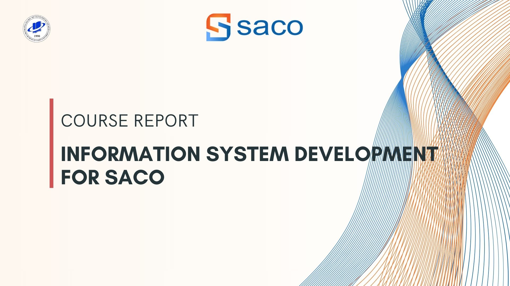
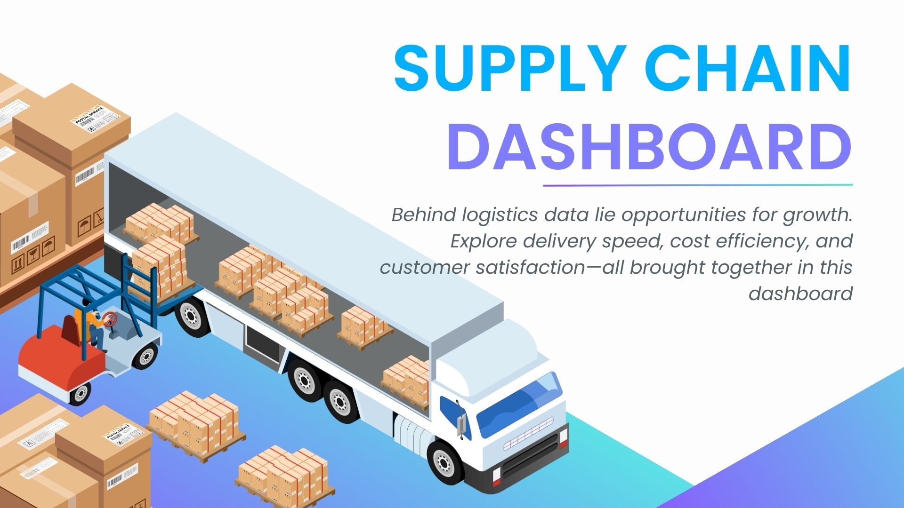

FEATURED
WORK.
Selected projects across data analytics, business analysis, and software systems.

Compared enterprise solutions, analyzed gaps, and proposed a phased roadmap to improve business operations.

Designed system requirements, workflows, and database structure for an advertising management platform.

Studied CRM capabilities, compared alternatives, and proposed improvements for customer and business operations.

Web-based food ordering system with browsing, cart, payment flow, and admin management.
Analyzed business processes and designed a 3-tier prototype supporting room assignment and billing logic.

Multi-role system with UML models, relational schema, and structured academic workflows.

Executive dashboard analyzing revenue, margin, and product-channel performance with DAX and star schema modeling.

Dashboard highlighting delivery performance, returns, and loss drivers to surface operational bottlenecks.


Recommendation logic and evaluation pipeline, comparing ranking metrics and outlining A/B testing direction.